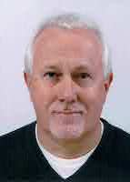
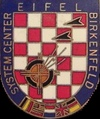

Biography
 Johan Goossens was born on June 3rd, 1960 in Bergen op Zoom, a small town (~40.000 people at the time) in the south of The Netherlands. In the early 70s, he developed a great interest in electronics which rapidly developed into an electrical and software engineering obsession. At the age of 14, he collected first generation TV sets (to reuse the tubes) and through his parents he met a Phillips research engineer who donated boxes full of experimental electronic parts and tons of old electronics magazines. Johan read every one of those magazines and soon started to build fun projects like radios, oscilloscopes and amplifiers. At the age of 16, he even build a small 'computer' based on Intel's very first chip. The Intel 4004 based JoGo computer (as in Johan Goossens) was battery powered, had 40 bytes of memory (no, I did not forget the word kilo, mega or giga), switches and push buttons for input and 4 red LEDs for output.
Slowly the electronics obsession turned to music and soon enough speaker cabinets, amplifiers, effects boxes and light shows were created. Initially, Johan ran a 'mobile disco' with friends but playing DJ was not satisfying enough so after discussions with school buddies, Johan, Willem and Marc decided to start a band. Marc was a classically trained acoustic guitar player who could sing very well, Willem decided to learn the bass and Johan added percussion to his list of obsessions.
As with most teenage bands, the early days were rough and the band quickly went through a number of different lineups. Johan and Marc remained a constant, Marc's sisters (Nicole and Vivianne) added great vocals, Leo and later Don (no mafia connections) replaced Willem on bass and finally Suus and later Ruud added electronic piano/keyboard to the mix. "Hippo" became a popular local band but military service and other real life interruptions made the band members drift apart.
 During those band years, most musicians went to the same high school
(Roncalli Scholengemeenshap) that had a unique education style based on the
Dalton Plan
(Dalton Systeem in Dutch). In this system, students are given a lot
of freedom to determine their own speed of learning and many classes
are a strange combination of classic lectures, discussion and
interaction. For Johan this turned out to be very important as he
clearly belonged to the spectrum of crippling introverts. Without
Roncalli, he would have never been able to learn how to act as an
extrovert.
During those band years, most musicians went to the same high school
(Roncalli Scholengemeenshap) that had a unique education style based on the
Dalton Plan
(Dalton Systeem in Dutch). In this system, students are given a lot
of freedom to determine their own speed of learning and many classes
are a strange combination of classic lectures, discussion and
interaction. For Johan this turned out to be very important as he
clearly belonged to the spectrum of crippling introverts. Without
Roncalli, he would have never been able to learn how to act as an
extrovert.
One interesting event happened however that could have changed the course of history. As a shy young man, Johan typically did not engage in the historical, political or social discussions during history and civics classes (same teacher). One day during elections in the Netherlands, Johan (out of the blue) decided to speak up and voice his slightly left of center progressive views. This was clearly not appreciated by his far left teacher who put him down immediately with those famous words: "What do you know about this? You're just the son of a milkman!". Well, that encounter could have made Johan an extreme crippling introvert for the rest of his life but something special happened. The other students did not accept the teachers reaction and picked a fight with him for being elitist and discriminatory. A debate raged for 2 hours (Johan took part as well) and at the end, the teacher apologized (half heartedly). Johan's extrovert journey had started.
 To avoid conscription in the Royal Netherlands Army, Johan voluntarily joined the Royal Netherlands Air Force in 1981 as a cadet at the Air Officers School in Gilze-Rijen. During his time in the service (the Cold War), Johan worked on the multinational Air Command and Control system EIFEL in Birkenfeld, Germany as a programmer/analyst. He left the Royal Netherlands Air Force in 1988 as a Captain to pursue a civilian career with NATO Headquarters SACLANT in Norfolk, VA.
As in most bands, the drummer gets the pretty girl and during the Hippo years, Johan started to date Nicole (yes the singer of the band and sister of his friend). In 1983, Nicole had moved to Germany and in 1988 they got married and moved to the US.
From 1988 to 1993, Johan worked for SACLANT as the System Software Section Chief in support of maritime command and control. In 1993, Johan and Nicole moved to San Diego, CA, to work at the US Navy Research Laboratory NOSC/NRaD (now called the Naval Information Warfare Center Pacific) as the NATO liaison officer.
In 1998, Johan returned to Norfolk, VA, to take the position of User Domain Support Branch Head for the ACLANT System Support Center (ASSC). In that role he was responsible for rapid development, in-service support and training for some NATO systems. These products constantly adopted emerging technologies, saw 15 major updates in 12 years and were proliferated throughout the entire Alliance and numerous NATO/Partner Nations.
After years of not playing in a band, Johan started Mid-Life Crises (MLC) in 1999 and very soon Nicole joined. An old passion was rediscovered and lots of dollars later, The Goossens' house was full of PA equipment, a recording studio and a light show.
In 2006, Johan became the ACT Technology and Human Factors Branch Head responsible for ACT’s Command and Control (C2) Concept Development, ACT’s Cyber Defence program, Federated Mission Networking (FMN), Enterprise Architecture, the Coalition Warrior Interoperability Exercise (CWIX) and the Think-tank for Information, Decision and Execution superiority (TIDE). Johan authored the original FMN concept, the NATO C2 Capstone Concept and was a driver in establishing Cyberspace as an operational domain in NATO.
From 2007 until 2009, Johan and Nicole also played in a band called Cujo Panic. Sadly both MLC and Cujo Panic are currently on an Eagles-style "until hell freezes over" break which led to the "Rock on 11" initiative where they try to make great covers of popular classic rock songs.
In 2018, Johan established the ACT Federated Interoperability Branch responsible for capability planning, interoperability standardization, verification and continuation. In this capacity, he acted as the Chairman of the multi-national FMN Capability Planning Working Group (CPWG), continued to work on C2 concepts and researched advanced application of data science and artificial intelligence in NATO.
In 2019, Johan got diagnosed with stage 2 bladder cancer. You can read his entire story in his "war on cancer" blog. After a 20 month battle with cancer and numerous infections, Johan is now cancer free and getting back to a regular life.
On January 1st, 2021, Johan retired after almost 40 years of continuous international service. Johan was awarded the prestigious NATO Meritorious Service Medal (MSM) in 2013 and the Golden Badge of the Estonian Ministry of Defense in 2015.
Today, Johan and Nicole happily live in Virginia Beach, VA were both spend time on their hobbies. Johan and Nicole have 2 children: Martijn and Melanie.